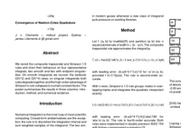
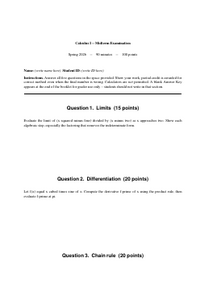
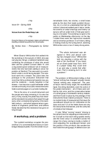

Hello1 pp
Hello from mdlout! This single paragraph is the smallest smoke test in the suite — if this page renders, the markdown → Lout → output pipeline is alive.
A visual gallery of the committed reference renderings under
examples/out/. Each thumbnail shows page 1 of the PDF
build; the links go to the full HTML render, the PDF, and the
Markdown source.
Regenerate with python3 examples/generate_gallery.py.
Thumbnails are extracted from the committed PDFs with
pdftoppm + ImageMagick convert.
Hello from mdlout! This single paragraph is the smallest smoke test in the suite — if this page renders, the markdown → Lout → output pipeline is alive.

Bullet, numbered, task, definition lists; pipe and grid tables.

This file exercises both block-level math ($$...$$ and fenced math blocks) and inline math ($...$). Real LaTeX math in every block.

Three ABC blocks of increasing complexity. The third one uses the %%score directive to lock two staves into a piano/harp grand-staff layout.

This report documents the current state of the mdlout Markdown-to-Lout converter. The toolchain is split into three layers: a single-file Python front end that parses Markdown and emits Lout source, a forked C...

This file exercises the two raw-passthrough fenced-code conventions: lout for arbitrary Lout source and svg for arbitrary SVG snippets. The latter should be routed through the @SVG macro once it lands.

This is the kitchen-sink regression document. It mixes every feature the other examples exercise into one file: headings at three levels, lists, tables, math, music, code, raw Lout, and the full inline-formatting...

We revisit the composite trapezoidal and Simpson 1/3 rules and chart their behaviour on four representative integrals, two smooth and two with endpoint singularities. On smooth integrands we recover the textbook...

It had been raining for three weeks when Aliyah first noticed that the map was changing on its own. She had pinned it to the wall of her flat on the eighth of March --- a battered survey chart of the Veil basin, the...

This document pushes Lout's diag package harder than diaggallery.md: a real grammar in railroad-diagram form, a binary search tree, a flowchart with mixed arrow styles, and a single diagram that combines several...

Senior audio DSP engineer with seven years of shipped real-time C++ on embedded ARM and desktop platforms. Particular focus on convolution reverberation, room correction, and low-latency scheduling. Comfortable across...

This document exercises every documented feature of Lout's @Diag package (the diag library, from chapter 9 of the Lout User's Guide). Each example uses the lout raw passthrough fence -- mdlout does not yet have a...

Name: (write name here) Student ID: (write ID here)

Formal US business letter built on type: doc plus raw-Lout passthrough.

When Eleanor Whitcombe first walked into the workshop in the autumn of 2023, she was carrying two things: a battered hardshell case containing the prototype of what she would later call the Lyrebird Concert Mark IV, and...

Numerical integration is the workhorse of applied mathematics: closed-form antiderivatives are the exception rather than the rule, and every physical simulation, statistical estimator, and engineering tolerance...

A six-slide tour of the document formatting system
mdlout is a single-file Python 3.10+ script with no third-party Python dependencies. The runtime requirements are a built copy of Lout (the C document formatting system, version 3.43) and -- only for the PDF pipeline --...
mdlout supports the usual collection of inline spans. This paragraph mixes bold, italic, and bold italic with a sprinkling of inline code spans referring to things like argv[0] and os.path.join.